Guide des tutoriels — espace enseignant
7 capsules, environ 11 min 42. Une ligne par plan : le texte exact que dira la voix, les copies d'écran de ce qu'on verra pendant qu'elle le dit, et la durée. À relire et à corriger avant qu'on synthétise et qu'on enregistre.
Guide du 2 septembre 2026
Les durées sont estimées. 2,71 mots à la seconde, relevés sur les 54 narrations déjà produites, plus 0,7 s de respiration. Synthétiser pour les connaître exactement engagerait la dépense qu'on veut éviter avant validation — et la synthèse HD n'est pas déterministe : deux tirages du même texte ne durent pas pareil.
Les copies d'écran sont réelles. Elles viennent du portail de démonstration, en rejouant les gestes du manifeste par la même fonction que le tournage. Quand un plan surligne un élément, l'image est rognée dessus ; quand l'écran bouge pendant le plan, il y a plusieurs images ; quand il ne bouge pas, une seule.
1Le portail en un coup d'œil
6 plans · environ 1 min 23
| Plan | Ce que la voix dit | Ce qu'on voit | Durée |
|---|---|---|---|
| a | Bienvenue dans l'espace enseignant de francis. En quelques minutes, nous allons faire le tour de vos outils : ouvrir un groupe, donner des dates à vos activités, suivre vos élèves et sortir le matériel de la semaine. Dit à la voix : « Bienvenue dans l'espace enseignant de franciss. En quelques minutes, nous allons faire le tour de vos outils : ouvrir un groupe, donner des dates à vos activités, suivre vos élèves et sortir le matériel de la semaine. » |  | 14 s |
| b | Tout tient dans une seule page. En haut, une bande blanche : le nom de la plateforme, et à droite votre session, qui reste ouverte trente jours sur cet appareil. |   | 11 s |
| c | Juste en dessous, votre groupe. C'est la première chose à choisir, et tout le reste en découle : le niveau du groupe décide de ce que vous verrez du catalogue et du matériel. Changez de groupe, et vous changez de classe. |   | 16 s |
| d | Sous le groupe, neuf boutons rangés en trois familles. Le cours : le catalogue, la planification, le matériel. Ma classe : les élèves et leurs codes, la progression, la séance sans compte. Et les outils, qui s'ouvrent chacun dans un nouvel onglet. |   | 16 s |
| e | Au bout de la ligne, un résumé dit où vous en êtes : combien d'élèves, combien d'activités déjà planifiées. Et dessous, le programme du jour — ce qui est ouvert, ce qui ferme bientôt. C'est le coup d'œil du matin, avant d'entrer en classe. |   | 17 s |
| fin | Voilà, c'est terminé pour cette capsule. Vous connaissez maintenant les grandes pièces du portail : le groupe, les neuf boutons, et le programme du jour. |  | 10 s |
2Planifier : donner une date
9 plans · environ 2 min 07
| Plan | Ce que la voix dit | Ce qu'on voit | Durée |
|---|---|---|---|
| a | Voici la règle la plus importante du portail, et la seule qu'il faut vraiment retenir. Une activité sans date n'existe pas pour l'élève. Un groupe neuf part complètement vide : tant que vous n'avez pas donné de date d'ouverture, la classe ne voit rien. |  | 17 s |
| b | Pour trouver une activité, un champ de recherche, et trois filtres. Cours, ce sont les modules de quatre heures du matin. Ateliers, les activités de deux heures de l'après-midi. La recherche cherche large : le titre, le domaine, même un temps de verbe. |   | 16 s |
| c | En dessous, la liste. Chaque rangée porte une pastille d'état, à droite. Elle a toujours une couleur, un symbole et un mot : vous n'avez jamais à deviner d'après la couleur seule. |   | 12 s |
| d | Quatre états, et c'est tout. Tiret, sans date : l'élève ne la voit pas. Flèche, à venir : la date est posée, elle arrive. Crochet, ouverte : l'élève peut y répondre. Croix, fermée : il peut relire, mais plus répondre. |  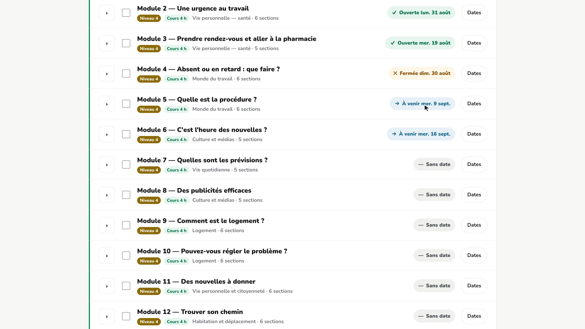  | 14 s |
| e | Cochez maintenant les activités de la semaine. Dès la première case, une barre apparaît en bas de l'écran et vous suit. C'est là que tout se décide. |  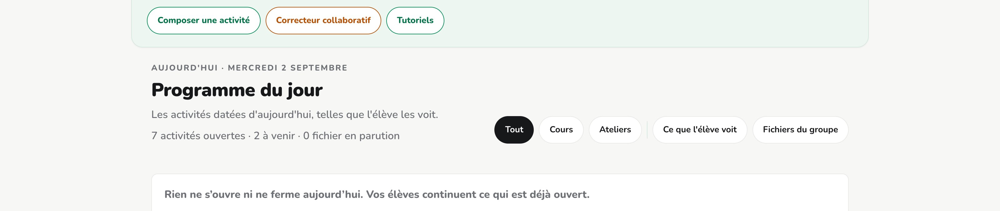 | 11 s |
| f | Vous donnez une date d'ouverture, une date de fermeture si vous en voulez une, puis vous choisissez un rythme. « Aucun », si elles ouvrent toutes le même jour ; « une par semaine », « une aux deux semaines », ou « une par jour ». Et par défaut, le portail saute les samedis et les dimanches. |  | 19 s |
| g | À droite, l'aperçu vous montre, avant de valider, quelle activité tombe quel jour. Rien n'est posé tant que vous n'avez pas cliqué sur « Enregistrer », en bas de la barre. Et si vous vous trompez, « Retirer les dates » ramène tout à zéro. |  | 16 s |
| h | Dernier réflexe avant de quitter la page : le bouton « Ce que l'élève voit ». Il ouvre exactement ce que votre classe a sous les yeux aujourd'hui. C'est le meilleur moyen de vérifier votre travail. |  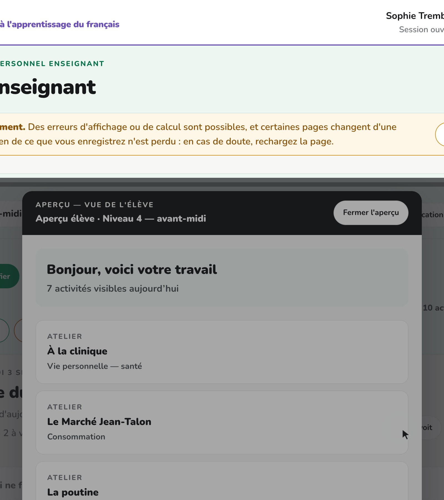  | 13 s |
| fin | Voilà, c'est terminé pour cette capsule. Vous savez cocher des activités, leur donner une date, choisir un rythme, enregistrer, et vérifier ce que votre classe voit. |  | 10 s |
3Ouvrir un module par sections
6 plans · environ 1 min 05
| Plan | Ce que la voix dit | Ce qu'on voit | Durée |
|---|---|---|---|
| a | Un module de cours ne s'ouvre pas forcément d'un seul bloc. Regardez le petit chevron, à gauche de chaque rangée. |   | 8 s |
| b | Il déplie les sections du module : « Je découvre », les défis, « Je me lance », « Je retiens des mots ». Chacune a sa propre case et sa propre pastille. |   | 10 s |
| c | Vous pouvez donc donner une date au « Défi 2 » comme vous en donnez une au module entier. Ce qui n'est pas encore ouvert reste grisé chez l'élève, avec sa date d'ouverture affichée. |   | 12 s |
| d | Et vous n'êtes jamais obligé de dater les six. Une section sans date propre suit simplement son module. Datez seulement ce que vous voulez retenir ; le reste s'ouvre avec le module. |  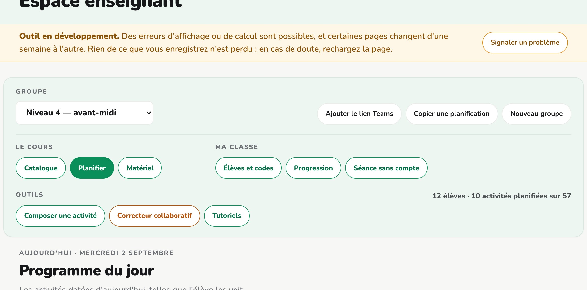 | 12 s |
| e | Sous les sections, le même chevron vous donne la fiche pédagogique du module : les savoirs, les actes de parole, les compétences visées et le vocabulaire. De quoi préparer votre cours sans même ouvrir l'activité. |   | 13 s |
| fin | Voilà, c'est terminé pour cette capsule. Un module peut s'ouvrir section par section, et vous ne datez que ce que vous voulez retenir. |  | 9 s |
4Les élèves et leurs codes
5 plans · environ 1 min 15
| Plan | Ce que la voix dit | Ce qu'on voit | Durée |
|---|---|---|---|
| a | Deuxième onglet : les élèves. Et ici, une chose à savoir tout de suite. Un élève ne s'inscrit jamais lui-même. C'est vous qui l'ajoutez au groupe, et le portail fabrique son code. |  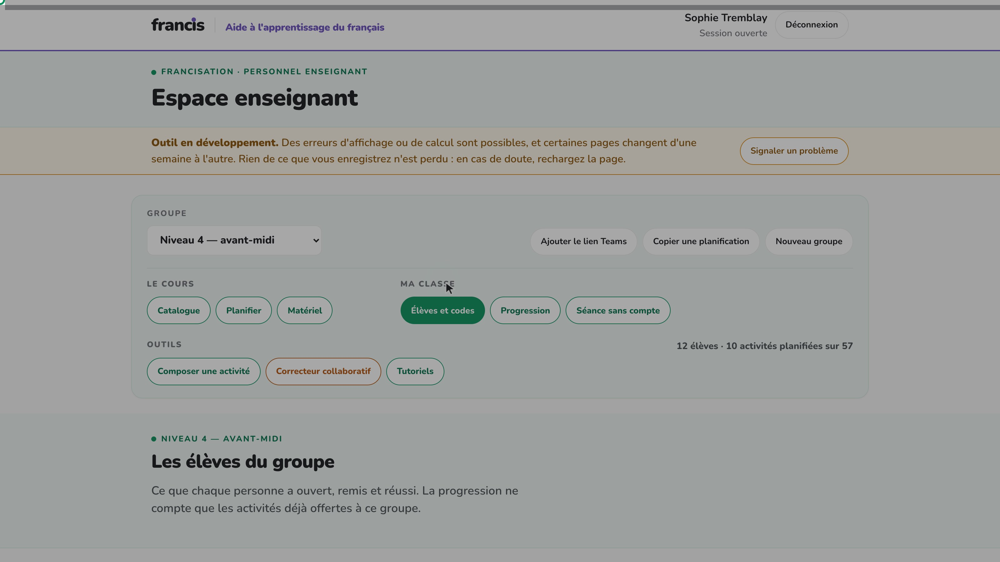  | 12 s |
| b | Ce code de six caractères est sa seule clé d'entrée. Pas de courriel, pas de mot de passe à retenir, pas de compte à créer. Il l'entre dans le portail élève, et il retrouve son travail. |   | 14 s |
| c | Pour ajouter quelqu'un : un pseudo, et pas le vrai nom. Le champ le dit lui-même — Colibri, Érable, Cardinal font très bien l'affaire. C'est ce pseudo qui s'affichera partout dans le portail. Puis « Générer le code ». Et si vous préparez une rentrée, laissez le champ vide et demandez plusieurs codes d'un coup : ils s'appelleront « Élève un, deux, trois », et vous poserez les pseudos à l'arrivée des personnes. |   | 25 s |
| d | « Imprimer les codes » sort un billet par élève, en noir et blanc : le groupe, le pseudo, le code, et l'adresse du portail. Vous découpez, vous distribuez, et la classe est en ligne. |   | 12 s |
| fin | Voilà, c'est terminé pour cette capsule. Chaque élève a son pseudo et son code, et vous savez comment les imprimer. Le suivi d'un élève, lui, a sa propre capsule. |  | 11 s |
5Vos groupes
5 plans · environ 53 s
| Plan | Ce que la voix dit | Ce qu'on voit | Durée |
|---|---|---|---|
| a | Troisième onglet : vos groupes. Créez-en un par classe. Chaque groupe a ses élèves, ses dates et sa progression, complètement séparés des autres. |  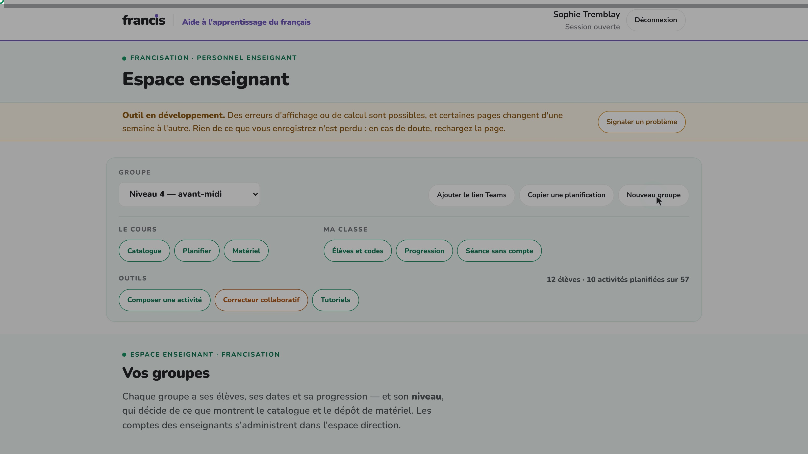  | 9 s |
| b | Le catalogue d'activités, lui, est commun à toute l'équipe. Personne ne recrée le contenu. Ce qui vous appartient, ce sont les dates que vous posez dessus. | 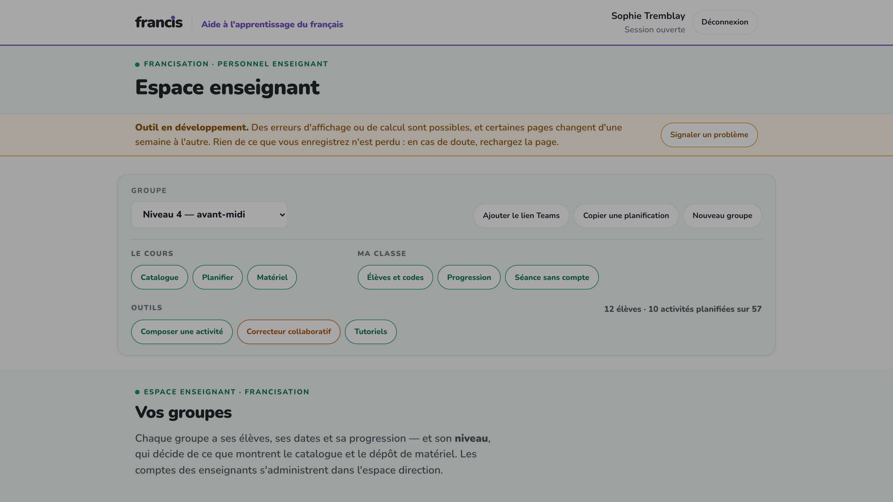 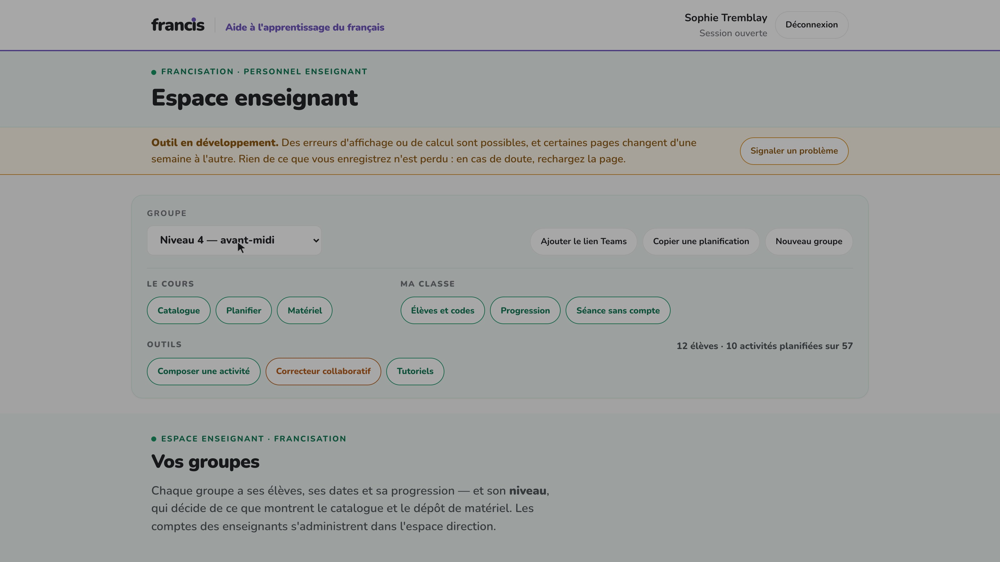 | 10 s |
| c | Et voici le geste qui démarre un groupe neuf en une minute : « Copier une planification ». Vous reprenez le calendrier d'un autre de vos groupes, décalé du nombre de jours voulu. |  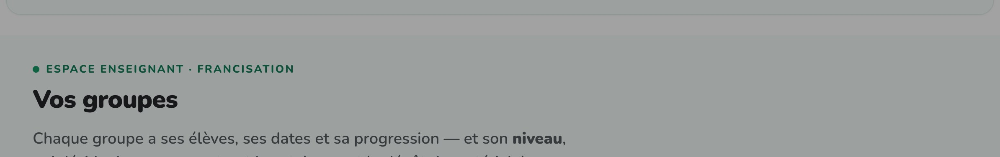  | 12 s |
| d | Deux précautions. Cette copie remplace les dates du groupe où vous êtes, elle ne s'y ajoute pas. Et la date « vue en classe » n'est pas copiée : celle-là reste votre trace personnelle, que l'élève ne voit jamais. |  | 14 s |
| fin | Voilà, c'est terminé pour cette capsule. Vous pouvez ouvrir un nouveau groupe et lui reprendre la planification d'un autre. |  | 8 s |
6Le dépôt de matériel
9 plans · environ 2 min 25
| Plan | Ce que la voix dit | Ce qu'on voit | Durée |
|---|---|---|---|
| a | Dernier onglet : le dépôt de matériel. C'est ici que vivent les présentations de séance et les fiches à imprimer produites par l'équipe. Deux vues du même écran : « Ma semaine » et « Le catalogue ». |  | 12 s |
| b | « Ma semaine » part de votre planification et vous montre, jour par jour, ce que vous avez au programme. Pour chaque plage, l'activité prévue et ses séances offertes en pastilles. |   | 11 s |
| c | Le catalogue, lui, range tout par module. Chaque module de cours est découpé en seize séances, codées de A un à E deux. Le code dit le bloc d'enseignement, et la barre du haut vous dit combien sont déjà produites. |  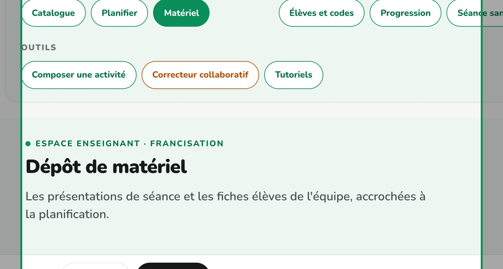  | 16 s |
| d | Un mot sur les seize séances, parce que ça surprend. Vos dates de planification suivent le découpage du module en six sections. Les présentations, elles, suivent une grille de seize séances de cours. Les deux grilles ne se correspondent pas : le portail vous les offre toutes, et c'est vous qui choisissez. |  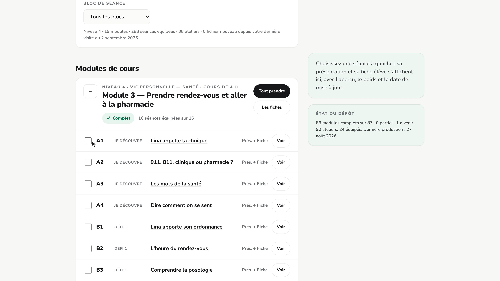 | 20 s |
| e | Cliquez sur le titre d'une séance : le panneau de droite vous montre la présentation, son aperçu, le nombre de diapositives, et la fiche élève qui l'accompagne. Vous téléchargez, vous ouvrez, ou vous imprimez directement. |  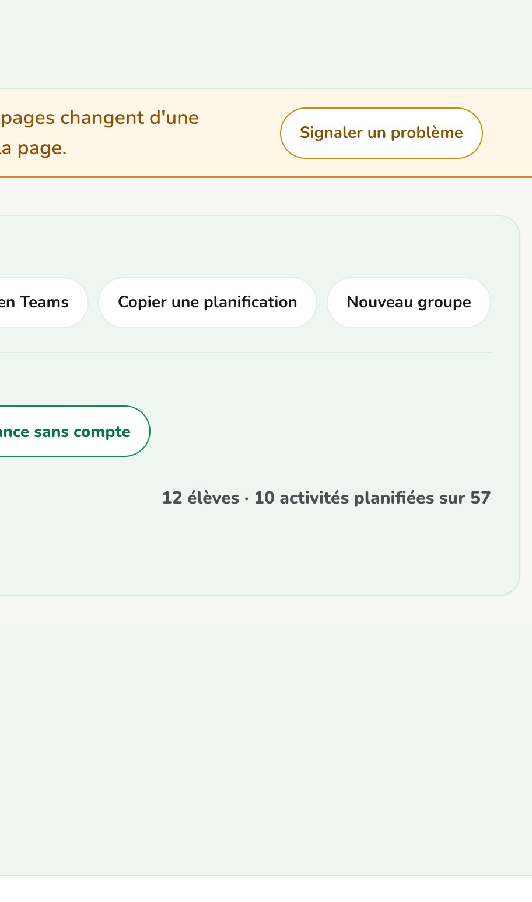 | 13 s |
| f | Descendez maintenant au bas du catalogue : « Dépôts de l'équipe ». Voici deux versions retravaillées par une collègue. Sur la séance A3, des diapositives allégées — deux exemples de moins, plus de temps de parole. Sur la A4, un exercice de plus pour ceux qui finissent avant les autres. |   | 18 s |
| g | C'est ça, déposer sa propre version. Votre fichier se range à côté de l'officiel, jamais à sa place : l'original reste téléchargeable, et la prochaine production automatique ne l'écrasera pas. Un compte administrateur peut aller plus loin et faire servir un dépôt à la place de l'officiel — là encore sans rien effacer, et ça se défait d'un clic. |  | 22 s |
| h | Cochez enfin plusieurs séances, et la sélection s'accumule en bas du panneau : vous descendez d'un coup toutes les présentations, ou toutes les fiches, ou vous les envoyez à l'imprimante en un seul dialogue, une fiche par page. Voilà, vous avez fait le tour. Le seul réflexe à garder : une activité qu'on n'a pas datée n'existe pas pour la classe. |   | 22 s |
| fin | Voilà, c'est terminé pour cette capsule. Le matériel de la semaine est à portée de main, et vos versions retravaillées se rangent à côté des fiches officielles. |  | 11 s |
7Composer une activité
12 plans · environ 2 min 34
| Plan | Ce que la voix dit | Ce qu'on voit | Durée |
|---|---|---|---|
| a | Dernier outil de la barre de groupe : « Composer une activité ». Il s'ouvre dans un nouvel onglet, donc votre planification en cours n'est jamais perdue. |  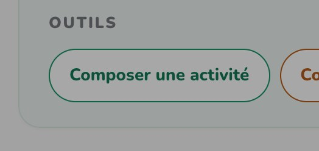  | 10 s |
| b | Le compositeur ne fabrique pas l'activité lui-même. Il assemble une commande — un prompt — à partir des critères du programme officiel de francisation. Vous choisissez, il écrit. |  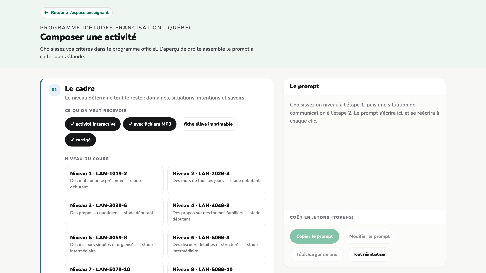  | 10 s |
| c | Première étape, le cadre. Et d'abord le niveau, parce qu'il commande tout le reste : les domaines, les situations, les intentions et les savoirs qui vous seront proposés en dépendent. Ici, niveau 4. |  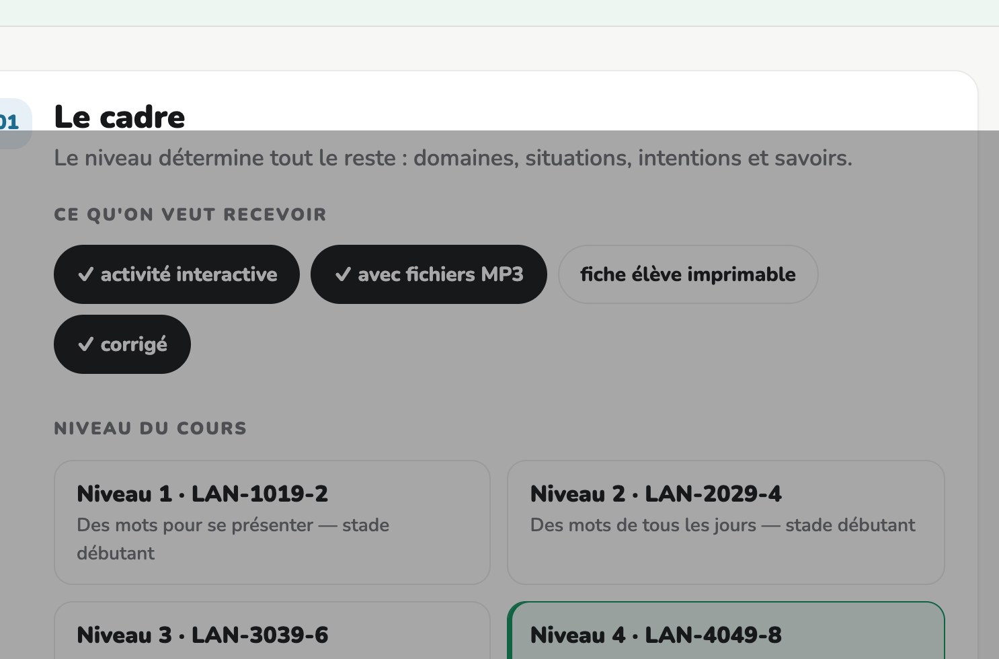 | 12 s |
| d | Puis la compétence travaillée, la durée de l'activité et la modalité de travail. Trois clics qui disent au modèle ce qu'il doit préparer : ici une production orale, en deux heures, en dyade. |  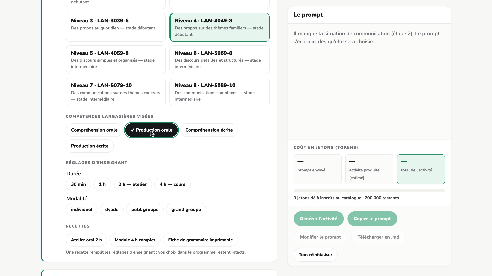  | 12 s |
| e | Deuxième étape, la thématique. Le domaine de vie, puis la situation de communication. Ces listes ne sont pas inventées : ce sont celles que le programme prescrit pour le niveau que vous venez de choisir. |  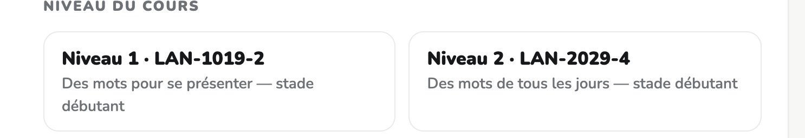 | 13 s |
| f | Troisième étape, les intentions de communication. Le programme en prescrit une liste pour cette situation, et une seule : ici, s'informer sur les conditions de location, et exprimer ses besoins ou ses préférences. Cochez celles que votre activité doit faire travailler. |  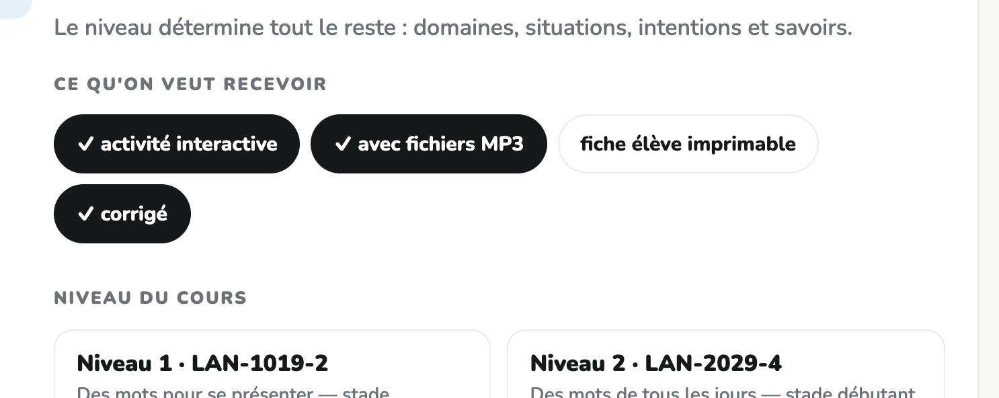 | 16 s |
| g | Quatrième étape, les savoirs. Il y en a plus de deux cents au niveau 4 : le champ de recherche les resserre. Tapez un mot, et vous ne voyez plus que ce qui s'y rapporte. Cochez la grammaire et le vocabulaire visés. |  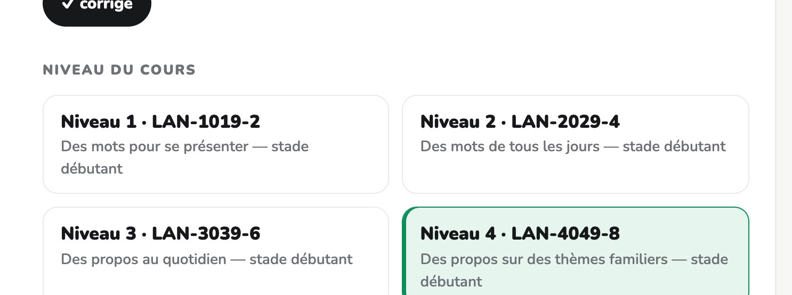 | 16 s |
| h | Vous pouvez aussi joindre votre propre documentation : un texte de départ, une annonce trouvée en ligne, une situation vécue en classe. « Ajouter un document » la verse dans la commande, et l'activité se construira autour. |  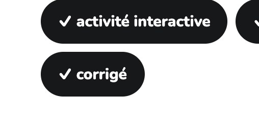 | 13 s |
| i | Pendant que vous cochez, le compteur en haut suit le coût en jetons : ce que le prompt enverra, ce que l'activité produira, et le total. Vous savez ce que vous engagez avant de lancer quoi que ce soit. |  | 15 s |
| j | Et le prompt s'écrit à mesure, en bas. Il reprend le niveau, le sigle du cours, la situation, les intentions et les savoirs que vous avez cochés, dans les termes exacts du programme. |  | 13 s |
| k | Il ne reste qu'à le prendre. « Copier le prompt » pour le coller dans Claude, « Modifier le prompt » si vous voulez ajuster une phrase, « Télécharger en point m d » pour le garder. Et « Tout réinitialiser » pour recommencer une autre activité. |  | 15 s |
| fin | Voilà, c'est terminé pour cette capsule. Le compositeur vous rend un prompt écrit dans les termes du programme, prêt à coller. |  | 8 s |